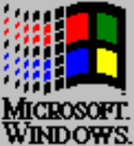

Microsoft Windows
Windows 95
Copyright © 1981-1995, Microsoft Corp.
This product has been crudely adapted by:
Daniel Antonio Heredia
Personal: daniel@dantonio.nyc
Meetings: schedule@dantonio.nyc
Sign-up for newsletter: newsletter@dantonio.nyc
OK